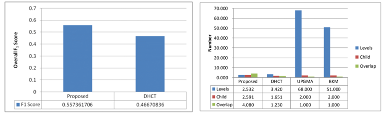

|

|
|
|
Year |
2013 |
| Description |
My graduation thesis, where I researched, conducted experiments, and proposed two methods to infer words containment relationship while building text hierarchical clusters. |
| Responsibility |
- Combined techniques of clustering, classification, taxonomy
- Was granted as the best pater by Taiwan Academic Network
- Improved about 20% overall F1 score on Wikipedia text collection and broke through WordNet’s limit
|
| Technology |
Java backend / Clustering / Word dependency / NGD / Big data |